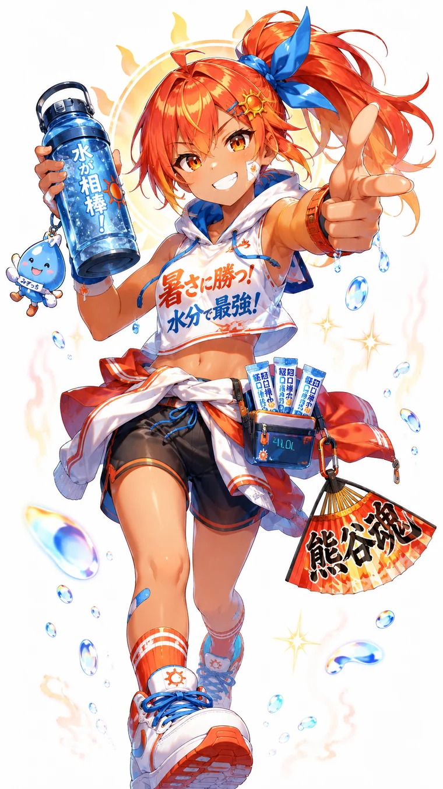

FIELD SKILL
日差しセンサー
照り返しチェック
LIVE COOL DOWN SUMMER
全国の気温から、休憩と水分補給のタイミングを案内
水を飲んで、木陰へ。
気温は勝負じゃなくて、休む目安。
観測時刻：取得中
同一観測時刻のアメダス気温データを使って、あなたの県と熊谷の温度差を表示します。

COOL-DOWN CHECK
アメダス観測値を読み込み中…
位置情報を許可すると、近い観測データと比較します。観測地点名は画面やX投稿に表示しません。
SUMMER GUIDES
47人が揃うまで、現在のキャラクターを8地方の案内役として暫定編成中。県に合わせて担当キャラが切り替わります。
観測時刻：取得中
全国の観測地点から、気温上位10地点＋熊谷偏差値100以上（熊谷と同じか高温）の全地点を表示します。熊谷偏差値は熊谷＝100の相対指数で、統計学上の偏差値ではありません。
県庁所在地付近の代表アメダス地点を、すべて同じ観測時刻で比較しています。
同一観測時刻の気温を高い順に集計しています。